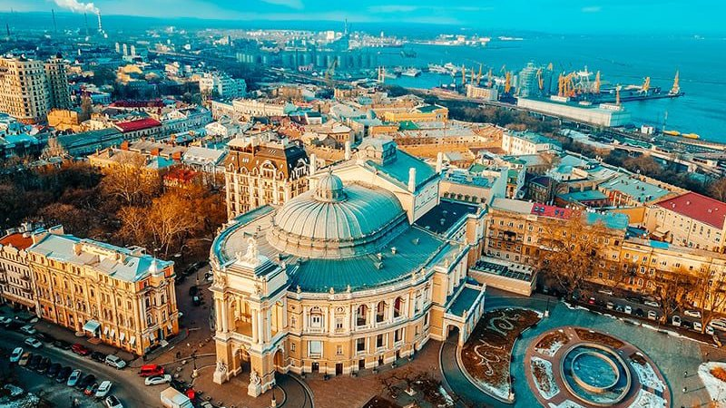
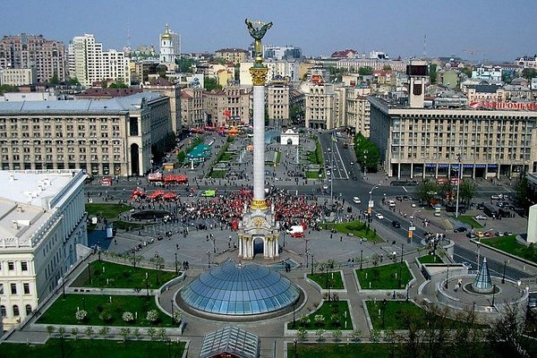
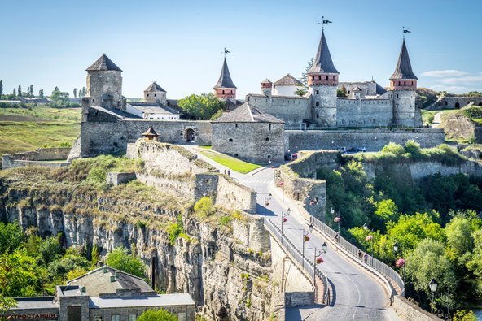
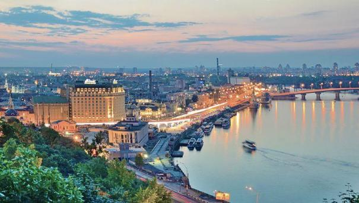
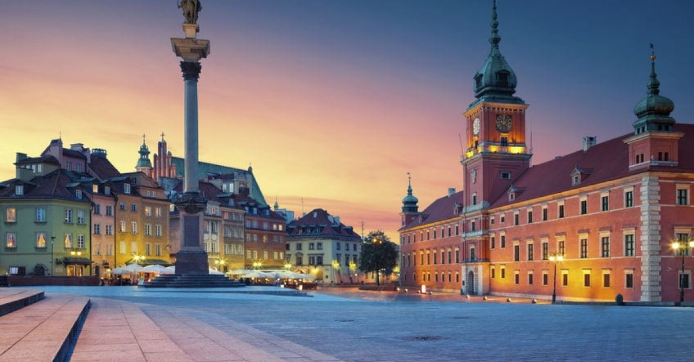

ערים
צבא
אוכל
היסטוריה
דף ראשי
|
ערים
|
צבא
|
אוכל
|
היסטוריה
|
דף ראשי
|
| האם אתה מחפש יעד לטיולים מחוץ לשבילים המציע היסטוריה עשירה, נופים יפים ואוכל טעים? אל תחפש יותר מאוקראינה! לפנינה מזרח אירופית זו יש הרבה מה להציע למטייל חסר הפחד, מטירות ומנזרים עתיקים ועד להרי הקרפטים המדהימים ולחוף הים השחור. בין אם אתם מעוניינים לחקור את התרבות וההיסטוריה העשירה של אוקראינה או פשוט ליהנות מהמטבח הלבבי שלה וממקומיים ידידותיים, טיול במדינה המרתקת הזו בטוח תהיה חוויה בלתי נשכחת. אז למה לא לארוז את המזוודות ולצאת להרפתקה אוקראינית? | |
| למה כדי להגיע לאוקראינה? | |
|  | היסטוריה ותרבות עשירה: לאוקראינה היסטוריה עשירה ומגוונת, עם השפעות מאימפריות ותרבויות שונות לאורך מאות שנים. מימי הביניים של קייבאן רוס, לתקופת הקוזקים ועד ברית המועצות, לאוקראינה יש שפע של אתרים היסטוריים וציוני דרך לחקור. קייב, עיר הבירה, היא ביתם של אתרים היסטוריים ותרבותיים חשובים רבים, כולל קתדרלת סנט סופיה העתיקה ומנזר קייב פצ'רסק לאברה. לבוב, במערב אוקראינה, ידועה בעיר העתיקה שהשתמרה היטב, שהיא אתר מורשת עולמית של אונסק"ו. מקומות בולטים נוספים לביקור כוללים את אזור ההדרה של צ'ורנוביל, האתר של האסון הגרעיני הידוע לשמצה, ובסיס הטילים הסובייטי לשעבר בפרבומאיסק. |
|  | נופים יפים: אוקראינה היא ביתם של מגוון נופים מדהימים, החל מהרי הקרפטים במערב ועד לחוף הים השחור בדרום. הרי הקרפטים מציעים הזדמנויות רבות לטיולים רגליים, סקי ופעילויות חוצות אחרות, עם מספר אתרי סקי כמו בוקובל ודראגובראט. חוף הים השחור ידוע בחופים היפים שלו, באקלים החם ובאתרי הנופש כמו אודסה ויאלטה. לאוקראינה יש גם אזור כפרי ציורי, עם גבעות מתגלגלות, יערות ואדמות חקלאיות זרועות כפרים וכנסיות ציוריות. |
|  | אוכל ושתייה טעימים: המטבח האוקראיני הוא לבבי וטעים, עם מגוון מנות מסורתיות שבטוח יספקו כל תיאבון. בורשט, מרק העשוי מסלק ושאר ירקות, הוא אחד המאכלים המפורסמים ביותר באוקראינה. Varenyky (כופתאות) הן מצרך נוסף, בדרך כלל מלא בתפוחי אדמה, גבינה או בשר. סאלו, שומן חזיר מרפא, הוא חטיף פופולרי או נלווה לוודקה. באוקראינה יש גם תרבות בירה משגשגת, עם מבשלות בירה מקומיות רבות המייצרות מגוון של בירות, החל מאגרים בהירים ועד סטאוטים עשירים. |
|  | מחירים נוחים: אוקראינה היא יעד זול יחסית למדינות אחרות באירופה, מה שהופך אותה לאופציה אטרקטיבית עבור מטיילים בתקציב נמוך. לינה, אוכל ותחבורה בדרך כלל זולים יותר מאשר במערב אירופה, ואטרקציות רבות הן בחינם או בעלות נמוכה. זה מקל על למתוח את התקציב שלך ולהפיק את המרב מהטיול שלך. |
|  | מקומיים ידידותיים: האוקראינים ידועים באירוח ובידידות שלהם כלפי מבקרים. למרות מחסומי השפה, המקומיים לעתים קרובות להוטים לעזור ולקבל את המטיילים בזרועות פתוחות. זה יכול ליצור חווית טיול סוחפת ומתגמלת יותר, ככל שתתחבר לתרבות ולאנשים המקומיים. |
| המדריך המלא לטיול לאוקראינה | |